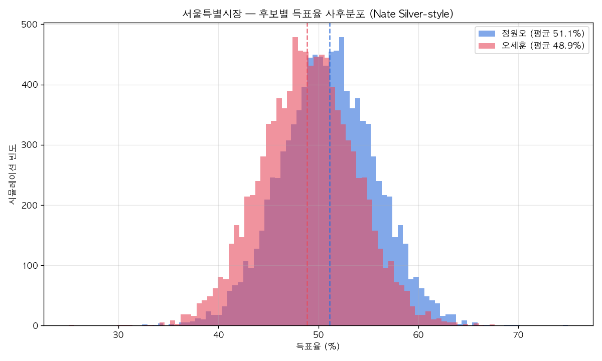
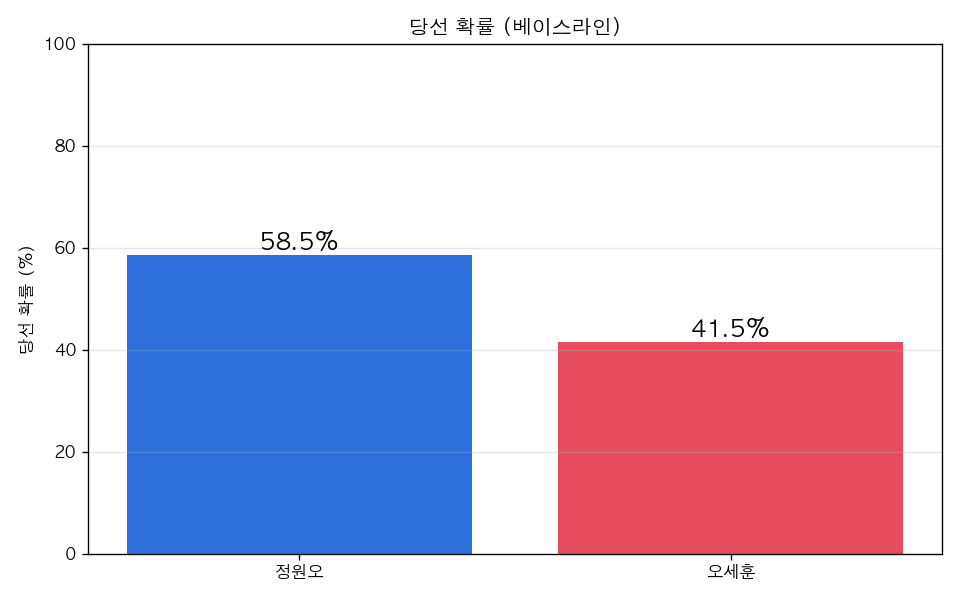
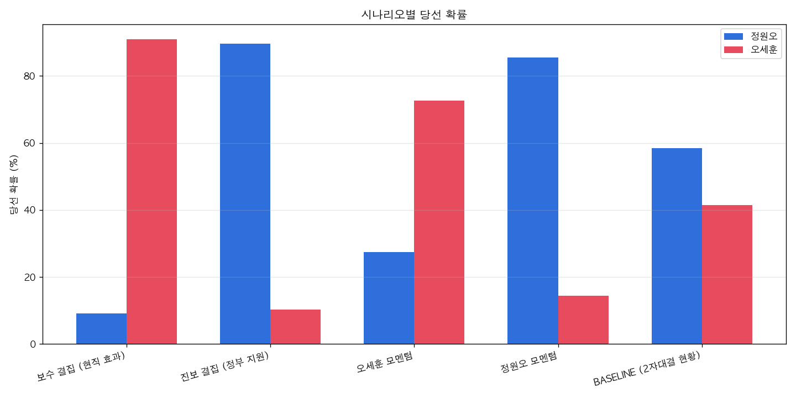
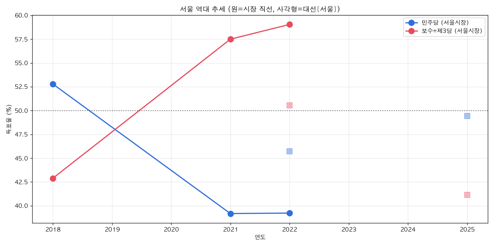

후보별 당선 확률
컴퓨터로 1만 번의 가상 선거를 돌려 본 결과 — 그 중 몇 번 당선되었는지의 비율
💡 이 사이트는 뭘 보여주나요?
과거 서울시장 선거 결과(2018·2021·2022) + 최근 여론조사 9건 + 서울 특유의 약한 "샤이 보수" 효과를 합쳐, 컴퓨터가 "오늘 시점에서 누가 당선될 확률이 얼마인지"를 매일 새로 계산해 보여줍니다. 어려운 용어나 자세한 계산이 궁금하면 위쪽의 📚 방법론·배경 탭을 눌러주세요.
샤이 보수 (Shy Conservative) 추정
여론조사에는 "보수 뽑겠다"고 답하기 꺼리는 사람이 있어, 실제 득표가 조사보다 보수 쪽으로 더 나오는 경향이에요. 서울은 부산보다 그 폭이 작습니다.
📊 산출 근거 (서울 지역 폴 vs 실제득표 격차)
- 2022 대선 서울 폴 윤석열 ~48% → 실제 50.56% +2.5%p
- 2022 지선 서울 폴 오세훈 ~58% → 실제 59.05% +1%p
- 2021 시장 보궐 폴 오세훈 53–58% → 실제 57.5% +1.5%p
⚡ 모델 영향 (보정 전 → 후)
| 후보 | 샤이 미적용 | 샤이 적용 | Δ |
|---|
예상 득표율 분포
각 후보가 받을 득표율의 "가능한 범위". 가운데 점은 가장 가능성 높은 값, 가는 막대는 90% 확률로 그 사이에 들어오는 범위예요.
예측 변화 추이
매일 새로 계산한 당선 확률을 시간순으로 본 그래프 — 시간이 지나면 추세선이 채워집니다
시나리오별 당선 확률
"만약 ~ 한다면" 식의 가상 상황에서 당선 확률이 어떻게 바뀌는지 비교
- 보수 결집(현직 효과) — 오세훈의 4선 시장 인지도와 보수표 결집 시 오세훈 우세로 전환
- 진보 결집(정부 지원) — 이재명 정부 지원 + 민주당 결집 강화 시 정원오 압승
- 오세훈 모멘텀은 최근 3주 격차가 좁혀진 추세가 지속될 경우
여론조사 (2자대결, 매체별 lean 표시)
매체마다 정치 성향이 달라서 결과가 조금씩 치우칠 수 있어요. 색깔로 매체 성향을 표시했고, 최근에 조사된 것부터 보여줍니다. ⭐ = 오세훈 오차범위 내 추격, ⚡ = 박빙
먼저, 어려운 용어부터 풀어볼게요
이 사이트에 나오는 통계 용어들을 일상 언어로 풀어 쓴 미니 사전
예측은 이렇게 만들어져요 (6단계)
매일 자동으로 돌아가는 계산 파이프라인 — Nate Silver 538 방식 + 서울 지역 보정
"서울은 원래 어떤 성향?"
서울 시장 선거 2022(0.30) + 2021보궐(0.20) + 2018(0.10) + 2022대선(0.15) + 2025대선(0.25)로 가중평균. 최근일수록 가중치 ↑. 보수 prior는 전부 오세훈에게.
"이 매체는 좀 치우치지 않나?"
여론조사 기관마다 결과가 살짝 한쪽으로 치우치는 경향(house effects)이 있어요. 우파 매체는 보수 후보를 평균보다 1.5%p 더 잡고, 좌파/중도좌 매체는 진보 후보를 1.0~1.5%p 더 잡는 식.
"최근 폴들을 합치자"
최근 21일 폴을 모두 가중평균. 최근 조사일수록(반감기 7일) + 응답자가 많은 조사일수록(√n) 비중을 더 줍니다. 부동층은 정원오/오세훈 = 45:55로 배분.
"전화에 안 잡히는 표 +1.5%p"
서울은 과거에 여론조사보다 실제 보수 득표가 평균 +1.5%p 정도 더 나왔어요 (2022 대선 +2.5, 2022 지선 +1, 2021 보궐 +1.5%p). 그 평균을 전부 오세훈에게 더해 줍니다.
"종합 예측 만들기"
1~4단계를 통계적으로 합쳐 새 예측을 만듭니다. 단, "여론조사가 진짜 그만큼 정확하진 않다"는 점을 반영해 표본을 1/7로 할인(design effect = 7). 비표본오차·매체 편향까지 고려한 안전장치예요.
"확률로 환산"
5단계 예측에서 1만 번 결과를 뽑아 봅니다. 각 시뮬레이션엔 "선거일까지 분위기가 흔들릴 수 있는 정도" (±4.5%p, 2자대결이므로 한 쪽이 오르면 반대쪽이 정확히 내림)도 더해요. 그 중 A 후보가 5,500번 이기면 "A 당선 확률 55%".
핵심 가정과 위험도
아래 가정 중 하나라도 크게 틀리면 결과가 달라집니다
선거 배경
왜 정원오 vs 오세훈인가
현직 오세훈 시장(국민의힘, 4선 도전)이 출마, 민주당은 성동구청장 정원오를 단일 후보로 선출. 이재명 정부 출범 후 첫 지방선거로 정부 지원·견제론이 핵심 변수.
2자 구도
정원오(더불어민주당, 성동구청장) vs 오세훈(국민의힘, 현직 시장). 군소 후보들이 있지만 양강 구도가 명확한 2자대결입니다.
서울은 어떤 곳
2018 박원순 압승 → 2021 보궐·2022 지선 오세훈 압승의 큰 진폭. 대선에서도 박빙(2022 윤석열 +5%p, 2025 이재명 우세). 전형적 swing 지역이라 prior를 약하게 잡습니다.
상세 시각화 (정적 이미지)
매일 자동 생성되는 PNG 차트 — 위쪽 인터랙티브 차트와 같은 데이터 기반




출처 모음 (Sources)
본 페이지에서 인용한 모든 자료의 원문 링크
📊 여론조사 (날짜순)
- MBC · 코리아리서치 1차 (4/28–29, n=800) 중도좌 정 48 · 오 32
- SBS · 입소스 (5/1–3, n=800) 중도 정 41 · 오 34
- 스트레이트뉴스 · 조원씨앤아이 (5/4–5, n=802) 중도좌 정 50.2 · 오 38.0
- 뉴스1 · 한국갤럽 (5/9–10, n=802) 중도 정 46 · 오 38
- JTBC · 메타보이스 (5/11–12, n=804) 중도좌 ★ 정 50 · 오 34 (격차 16%p)
- CBS · 한국사회여론연구소 (5/12–13, n=1002) 중도좌 ⚡ 오차범위 내 — 정 44.9 · 오 39.8
- KBS · 한국리서치 (5/11–14, n=800) 중도좌 정 43 · 오 32
- MBC · 코리아리서치 2차 (5/16–17, n=800) 중도좌 정 43 · 오 35
- 조선일보 · 메트릭스 (5/16–17, n=800) 우파 ⚡ 오차범위 내 — 정 40 · 오 37
- 채널A · 리서치앤리서치 (5/17–19, n=802) 우파 정 43.9 · 오 35.7